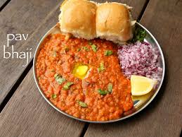

Pav Bhaji

Description
Pav Bhaji is a popular Indian street food made from mashed vegetables cooked in a spiced tomato-based gravy,
served with buttered pav (bread rolls). The vegetables typically used include potatoes, peas, carrots, and bell
peppers, which are boiled and mashed together. The spicy gravy is made using onions, tomatoes, ginger, garlic,
and a special pav bhaji masala, creating a flavorful dish that is both comforting and satisfying.
Steps
- Boil the vegetables(potatoes, peas, carrots, and bell peppers) until soft.
- Heat oil in a pan, sauté onions, garlic, and ginger until golden, then add tomatoes and cook until soft.
- Add pav bhaji masala, salt, and red chili powder to the tomato mixture, then stir in the boiled vegetables
and mash everything together.
- Add water for desired consistency, cook for a few minutes, and adjust the seasoning.
- Toast pav with butter on a separate pan and serve the bhaji with the pav, garnished with chopped onions,
cilantro, and a squeeze of lemon.